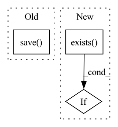

Pattern ID :29710
Before Change
state_dict = {"model": self.model.state_dict()}
if self.config["k_fold"]:
path=self.config["trained_model_path"][:-4]+"-fold{}.pth".format(self.config["fold_t"])
torch.save( state_dict,path)
else:
torch.save(state_dict, self.config["trained_model_path"])
def _load_model(self):After Change
save_dir = os.path.join(trained_model_dir, "fold{}".format(self.config["fold_t"]))
else:
save_dir = trained_model_dir
if not os.path.exists( save_dir) :
os.mkdir(save_dir)
model_file = os.path.join(save_dir, "model.pth")
torch.save(state_dict, model_file)In pattern: SUPERPATTERN
Frequency: 3
Non-data size: 3
Instances Fragment ID: 88065413
Project Name: lyh-yf/mwptoolkit
Commit Name: 5bd2c2734c80f88c3144c7975750f174e39120e2
Time: 2022-04-08
Author: yifan2250@gmail.com
File Name: mwptoolkit/trainer/abstract_trainer.py
M Class Name: AbstractTrainer
N Class Name: AbstractTrainer
M Method Name: _save_model(1)
N Method Name: _save_model(1)
M Parent Class: object
N Parent Class: object
M File Name: mwptoolkit/trainer/abstract_trainer.py
N File Name: mwptoolkit/trainer/abstract_trainer.py
M Start Line: 73
M End Line: 78
N Start Line: 85
N End Line: 99
Before Change
dataX_shuffled = training_dataX[permutation]
dataY_shuffled = training_dataY[permutation]
np.save( os.getcwd() + f"\\training_data\\processed\\{data_name}\\{data_name}X.npy", dataX_shuffled)
np.save(os.getcwd() + f"\\training_data\\processed\\{data_name}\\{data_name}Y.npy", dataY_shuffled)
print("balanced data saved!")
After Change
def preprocess():
// this code piece is added for safety and ensures that there always will be the folder
check_processed_folder = os.getcwd() + "\\training_data\\balanced"
if not os.path.exists( check_processed_folder) :
os.mkdir(check_processed_folder)
data_name = input("which data do you want to preprocess: ") Fragment ID: 88065412
Project Name: edilgin/deepforspeed
Commit Name: 731d90ad421e98f3411d851286ec7b64442a4597
Time: 2022-03-16
Author: fehimornek@gmail.com
File Name: processData.py
M Class Name: AnonimousClass
N Class Name: AnonimousClass
M Method Name: preprocess(0)
N Method Name: preprocess(0)
M Parent Class:
N Parent Class:
M File Name: processData.py
N File Name: processData.py
M Start Line: 17
M End Line: 100
N Start Line: 17
N End Line: 105
Before Change
// crop box xywh
crop_image = image.crop([pos_x, pos_y, pos_x + args.image_size, pos_y + args.image_size])
// Save all images
crop_image.save( f"{new_image_dir}/{file_name.split(".")[-2]}_{pos_x}_{pos_y}.{file_name.split(".")[-1]}")
print("Data split successful.")
shutil.rmtree(raw_image_dir)
After Change
shutil.rmtree(raw_target_image_dir)
if os.path.exists(new_inputs_dir):
shutil.rmtree(new_inputs_dir)
if os.path.exists( new_target_dir) :
shutil.rmtree(new_target_dir)
os.makedirs(raw_inputs_image_dir)
os.makedirs(raw_target_image_dir) Fragment ID: 88065410
Project Name: lornatang/vdsr-pytorch
Commit Name: 4e24f1c9892bfa6178aed97d12926379f3c40492
Time: 2021-11-22
Author: liuchangyu1111@gmail.com
File Name: scripts/prepare_dataset.py
M Class Name: AnonimousClass
N Class Name: AnonimousClass
M Method Name: main(1)
N Method Name: main(1)
M Parent Class:
N Parent Class:
M File Name: scripts/prepare_dataset.py
N File Name: scripts/prepare_dataset.py
M Start Line: 39
M End Line: 59
N Start Line: 24
N End Line: 76